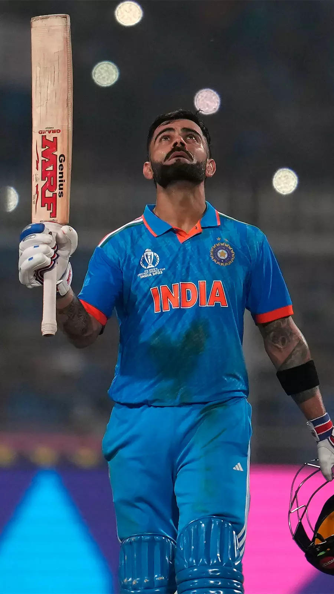
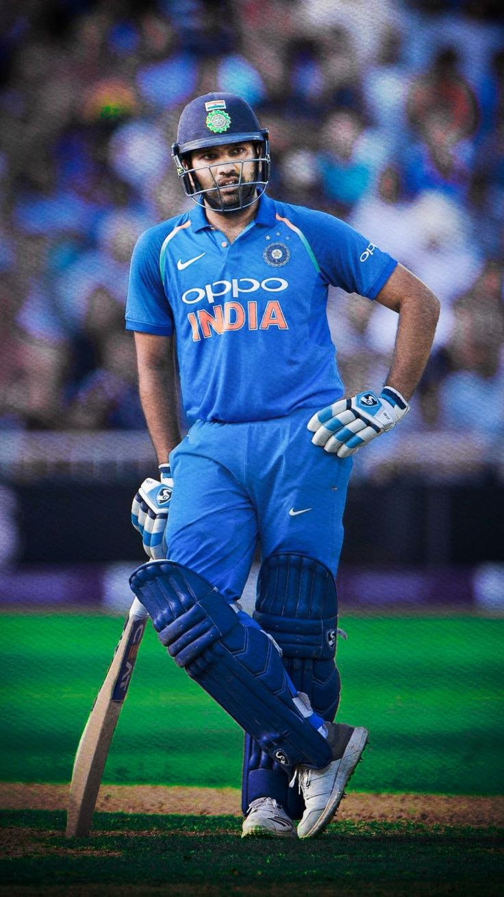

MS Dhoni

| Personal Information | |
|---|---|
| Full Name | Mahendra Singh Dhoni |
| Born | 7 July 1981 (age 42) Ranchi, Bihar (present-day Jharkhand), India |
| Nickname | Mahi, Thala, Captain cool |
| Height | 5 ft 9 in (175 cm) |
| Batting | Right-handed |
| Bowling | Right-arm medium |
| Role | Wicket-keeper-batter |
| Relation | Sakshi Dhoni (wife) |
| National Side | India (2004-2019) |
| Shirt No | 7 |
Mahendra Singh Dhoni (born 7 July 1981) is an Indian professional cricketer.
He is a right handed batter and a wicket-keeper. Widely regarded as one of the
most prolific wicket-keeper-batsmen and captains, he represented the Indian cricket
team and was the captain of the side in limited-overs formats from 2007 to 2017 and
in test cricket from 2008 to 2014. Dhoni has captained the most international matches
and is the most successful Indian captain with wins in the 2007 ICC World Twenty20,
the 2011 Cricket World Cup, the 2013 ICC Champions Trophy and the Asia Cup in 2010,
2016 and 2018. He plays for and captains Chennai Super Kings in the Indian Premier League (IPL).
Born in Ranchi, Dhoni made his first class debut for Bihar in 1999. He made his debut for
the Indian cricket team on 23 December 2004 in an ODI against Bangladesh and played
his first test a year later against Sri Lanka. In 2007, he became the captain of the
ODI side before taking over in all formats by 2008. Dhoni retired from test cricket in 2014,
but continued playing in limited overs cricket till 2019. He has scored 17,266 runs in international
cricket including 10,000 plus runs at an average of more than 50 in ODIs.
Dhoni plays for Chennai Super Kings in the IPL, leading them to the final on ten occasions
and winning it five times (2010, 2011, 2018, 2021 and 2023). He has also led CSK to two
Champions League T20 titles in 2010 and 2014. He is amongst the few batsmen to have scored
more than five thousand runs in the IPL, as well as being the first wicket-keeper to do so.
In 2008, Dhoni was awarded India's highest sport honor Major Dhyan Chand Khel Ratna Award by
Government of India. He received the fourth highest civilian award Padma Shri in 2009 and third
highest civilian award Padma Bhushan in 2018. Dhoni holds an honorary rank of Lieutenant Colonel
in the Parachute Regiment of the Indian Territorial Army which was presented to him by the Indian
Army in 2011. He is one of the most popular cricketers in the world.
Early Life

Dhoni was born on 7 July 1981 in Ranchi, Bihar (now in Jharkhand) in a Hindu Rajput family to
Pan Singh and Devaki Devi. His parents hailed from Lwali village in Uttar Pradesh (now Uttarakhand)
and he was the youngest of three children. His family spells the surname as "Dhauni".
Dhoni did his schooling at DAV Jawahar Vidya Mandir where he started playing football as a goal keeper
but later moved to play cricket on the suggestion of his coach Keshav Banerjee. From 2001 to 2003,
Dhoni worked as a Travelling Ticket Examiner (TTE) at Kharagpur under South Eastern Railway zone of Indian Railways.
Career
Early Career
He played as a wicket-keeper for Commando cricket club from 1995 to 1998 and Central Coal
Fields Limited (CCL) team in 1998. At CCL, he batted higher up the order and helped the
team qualify to the higher division. Based on his performance at club cricket, he was
picked for the 1997/98 season of Vinoo Mankad Trophy under-16 championship. In the 1998–99,
Dhoni played for Bihar U-19 team in the Cooch Behar Trophy and scored 176 runs in 5 matches.
In the 1999–2000 Cooch Behar Trophy, the Bihar U-19 cricket team made it to the finals,
where Dhoni made 84 in a losing cause.[16] Dhoni's contribution in the tournament included
488 runs in nine matches with five fifties, 17 catches and seven stumpings. Dhoni made it
to the East Zone U-19 squad for the C. K. Nayudu Trophy in the 1999–2000 season and scored
only 97 runs in four matches, as East Zone lost all the matches and finished last in the tournament.
Dhoni made his Ranji Trophy debut for Bihar against Assam in the 1999–2000 season, as an
eighteen-year-old scoring 68 runs in the second innings. Dhoni finished the season with
283 runs in 5 matches. Dhoni scored his maiden first-class century while playing for Bihar
against Bengal in the 2000–01 Ranji Trophy season. Apart from this century, his performance
in the 2000/01 season did not include another score over fifty and in the 2001–02 Ranji Trophy season,
he scored just five fifties in four Ranji matches. Dhoni's played for Jharkhand in the 2002–03
Ranji Trophy and represented East Zone in the Deodhar Trophy where he started gaining recognition
for his lower-order contribution as well as hard-hitting batting style. In the 2003/04 season,
Dhoni scored a century (128*) against Assam in the first match of the Ranji ODI tournament and was
part of the East Zone squad that won the Deodhar Trophy 2003–2004 season scoring 244 runs in four
matches.
In the Duleep Trophy finals, Dhoni represented East zone and scored a fighting half-century in the
second innings in a losing cause.[26] Dhoni was identified as one of the emerging talents via the
BCCI's small-town talent-spotting initiative TRDW. In 2004, Dhoni was picked for the India A squad
for a tour of Zimbabwe and Kenya.[29] Against the Zimbabwe XI in Harare Sports Club,
Dhoni effected seven catches and four stumpings.[30] In the tri-nation tournament involving Kenya,
India A and Pakistan A, Dhoni helped India A chase down their target of 223 against Pakistan A with
a half-century and scored scored 362 runs in six innings at an average of 72.40 with back to back
centuries.
International Career
The Indian ODI team in the early 2000s saw Rahul Dravid as the wicket-keeper to ensure that the
wicket-keeper spot didn't lack in batting talent and also tried other wicket-keeper/batsmen like
Parthiv Patel and Dinesh Karthik. With Dhoni performing well for the India A squad, he was picked
in the ODI squad for the Bangladesh tour in December 2004. Dhoni made his debut in the first match
of the series and was run out for a duck. Dhoni was picked for the subsequent ODI series against
Pakistan. In the second match of the series in Visakhapatnam, Dhoni playing in his fifth one-day
international, scored 148 runs off 123 deliveries which surpassed the earlier record for the highest
score by an Indian wicket-keeper. Dhoni played in the Sri Lankan bilateral ODI series in
October–November 2005 and was promoted to No. 3 in the batting order in the third ODI at Jaipur
where he scored an unbeaten 183 runs off 145 balls, winning the game for India.
The innings would surpass his earlier record for the highest score by an Indian wicket-keeper
and was described in Wisden Almanack as 'Uninhibited, yet anything but crude'. It was also the
highest individual score in ODI cricket in a run chase, a record which was broken seven years
later by Shane Watson. Dhoni ended the series with the highest aggregate of 346 runs and was
awarded the Man of the series.
In the DLF Cup 2006-07, Dhoni scored 43 runs as the team lost twice in three games and did not
qualify for the finals. In the 2006 ICC Champions Trophy, India lost to West Indies and Australia,
though Dhoni scored a half-century against West Indies and failed to make it to the knock out stage.
In the ODI series in South Africa in November 2006, Dhoni scored 139 runs in four matches in the series
loss. In the test series that followed, Dhoni scored 114 runs in two tests including a first test
victory in South Africa in the first test, but was ruled out of the third test with injury. Dhoni made
his T20 international debut in December 2006 against South Africa at Johannesburg. Dhoni was
subsequently named in the ODI team of the year by the ICC for 2006.
Dhoni led India to victory in the 2016 Asia Cup where India remained unbeaten. Dhoni stepped down as
captain of India in January 2017 ahead of the ODI series at home against England. In the second game
of the series, he scored 134 off 122 balls, his tenth century in ODIs and his first in over three years.
He was named as a wicket-keeper of the 'Team of the Tournament' at the 2017 ICC Champions Trophy in which
India finished as runners-up. In August 2017, during the fifth and final ODI against Sri Lanka in Colombo,
he became the first wicket-keeper to effect 100 stumpings in ODIs when he stumped Akila Dananjaya off
Yuzvendra Chahal. He reached the milestone of effecting 400 dismissals in ODIs in February 2018, following
the stumping of Aiden Markram in the third ODI of the South Africa tour.
Domestic Career

Dhoni made his debut in first class and List A cricket in the 1999–2000 season for Bihar. He has
also played for Rajasthan Cricket Association President's XI, East zone and Rest of India in domestic
cricket. In BCCI Corporate trophy, he played for Air India until his resignation from the company in
2013. In February 2005, Dhoni played for India seniors in Challenger trophy, where he scored 102
against India B. Jharkhand State Cricket Association (JSCA) appointed him captain of the Jharkhand
team in February 2017 for the 2017-18 Vijay Hazare trophy and on 25 February 2017, he scored his first
ever domestic list-A century against Chhattisgarh and led the team to the quarter final where Jharkhand
lost against Delhi.
Dhoni was acquired by Chennai Super Kings (CSK) for US$1.5 million during the auction for the inaugural
season of the Indian Premier League (IPL). He was the most expensive signing in the auction. Dhoni
scored 414 runs to lead CSK to the finals in the first season of IPL. Under his captaincy, CSK won the
2010 season and qualified for Champions League Twenty20. Chennai won the 2010 Champions league. Dhoni
scored 392 runs and led CSK to its second consecutive IPL title in 2011. Dhoni led CSK to its second
Champions League Twenty20 title in 2014. Dhoni scored 2987 runs from 129 matches in the IPL across the
first eight seasons for the Super Kings.
Dhoni returned to Chennai Super Kings for the 2018 season. Dhoni scored 455 runs in the season and led
CSK to its third IPL title. Dhoni led CSK to the title again in 2021 and was retained by CSK for ₹12
crore (US$1.5 million) before the auction for 2022 season. He stepped down from the captaincy of CSK
on 24 March 2022 and Ravindra Jadeja was appointed as the new captain. However, on 30 April 2022,
Jadeja handed over the captaincy back to Dhoni in the middle of the season. Dhoni led the franchise to
victory in the 2023 IPL season. Under his captaincy, CSK became the most successful IPL franchise with
five title wins and ten final appearances. MS Dhoni became the first player to play 200 T20 matches for
Super Kings and holds the record for most appearances in the IPL.
Record and Achievements
Tests
- Most runs by an Indian wicket-keeper (4876)
- Most number of sixes by an Indian captain (78)
- Most dismissals by an Indian and fifth most by any wicket-keeper (294)
- Most wins by an Indian captain and second most overall (110)
- Second most runs as captain (6641)
- Third most number of matches as captain (200)
- First player to pass 10,000 runs with an average of over 50
- Most not-outs (84)
- Highest score by a wicket-keeper (183*)
- Highest eighth wicket partnership for India
- Most dismissals in an innings (6) and career (432) by an Indian wicket-keeper
- Most stumpings by any wicket-keeper (123)
- Second most matches as captain (72)
- Most T20I innings (76) and runs (1,153) before scoring a fifty
- Most stumpings as wicket-keeper (34)
- Most catches as wicket keeper in a T20I innings (5)
- Most international matches as captain (332)
- Most stumpings (195) and only wicket-keeper to make 150 stumpings
- Third most dismissals as a wicket-keeper (829)
- Sixth most sixes in career (359)
| Type | Matches | Won | Lost | Drawn | Tied | No Result |
|---|---|---|---|---|---|---|
| Test | 60 | 27 | 18 | 15 | - | - |
| ODI | 200 | 110 | 74 | - | 5 | 11 |
| T20I | 72 | 41 | 28 | - | 1 | 2 |
Also Visit

Virat Kholi

Rohit Sharma
 Shikhar Dhawan
Shikhar Dhawan
 Yuvraj Singh
Yuvraj Singh